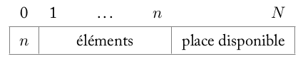

Structures de données: implémentation et interface¶
Les tableaux (le retour)¶
En classe de première on a rencontré et utilisé des tableaux. En toute rigueur, ce sont des structures ayant une taille fixe et contenant des objets de même type.
Cependant, Python n’implémente pas des tableaux répondant à ces critères (du moins pas sans module spécialisé). A la place, on trouve une structure plus complexe: les tableaux dynamiques (les fameuses “listes de python” ou encore objet de type list) qui ont la propriété de pouvoir être agrandis, à droite.
On peut ajouter ou retirer des éléments d’une liste de python avec les méthodes append et pop.
t = [10, 20, 30]
t.append(50)
t.append(70)
print(t)
[10, 20, 30, 50, 70]
t.pop()
70
print(t)
[10, 20, 30, 50]
On peut éventuellement agrandir le tableau “par la gauche” avec la méthode insert:
t.insert(0, -20)
print(t)
[-20, 10, 20, 30, 50]
On évitera autant que possible cette pratique à cause de ses médiocres performances, notamment sur les tableaux de grande taille.
Enfin, l’accès à la dernière valeur du tableau est très simple avec l’index -1:
print(t[-1])
50
Une première structure simple: la pile¶
Considérons le problème de l’annulation de la dernière action enregistrée de nombreux logiciels (le fameux Crtl+Z). Il s’agit de sauvegarder les actions de l’utilisateur et de pouvoir restaurer la dernière si besoin.
Une structure adaptée pour résoudre ce problème est: une pile (stack en anglais) . Voir une animation de son utilisation ci-dessous.
from IPython.display import YouTubeVideo
YouTubeVideo('1SWr7q121gc', width=800, height=450)
Une première réalisation possible d’une pile (bornée) peut se faire avec un tableau (de taille fixe \(N\)). La première case du tableau (index 0) stockera le nombre \(n\) d’éléments de la pile, permettant ainsi d’avoir accès au sommet.

Les opérations d’insertions et de suppressions, qu’on nomme empiler et dépiler (en anglais push et pop), se font au sommet.
Il est évident qu’on ne peut pas dépiler une pile vide ou empiler une pile pleine ! Il faut donc gérer ces cas. Souvent, on prévoit une fonction est_pilevide dont le nom est suffisamment explicite.
Enfin, une fonction sommet (en anglais top) permet de connaitre l’état de la pile; en fait le sommet est le seul élément accessible de la pile.
TAILLE = 5
#la taille choisie est arbitraire
def creer_pile(n=TAILLE):
p = [None for _ in range(n + 1)]
p[0] = 0
return p
def est_pilevide(p):
return p[0] == 0
def depiler(p):
assert not est_pilevide(p), "Erreur: pile vide"
n = p[0]
p[0] -= 1#ne pas oublier de réajuster le sommet
return p[n]
def empiler(p, val):
n = p[0]
assert n < len(p) - 1, "Erreur: pile pleine"
n += 1#la pile va contenir un élément de plus
p[0] = n
p[n] = val
def sommet(p):
assert not est_pilevide(p), "Erreur: pile vide"
return p[p[0]]
Travail: donner la situation de la pile après chacune des opérations suivantes:
p = creer_pile()
empiler(p, 5)
empiler(p, 15)
empiler(p, 25)
depiler(p)
Quelle valeur se trouve au sommet de la pile? Le vérifier.
p = creer_pile()
empiler(p, 5)
empiler(p, 15)
empiler(p, 25)
depiler(p)
print(sommet(p))
depiler(p)
print(sommet(p))
15
5
"""
|0|..|..|..|..|..|
|1| 5|..|..|..|..|
|2| 5|15|..|..|..|
|3| 5|15|25|..|..|
|2| 5|15|..|..|..|
"""
'\n|0|..|..|..|..|..|\n|1| 5|..|..|..|..|\n|2| 5|15|..|..|..|\n|3| 5|15|25|..|..|\n|2| 5|15|..|..|..|\n'
On peut aussi réaliser une pile (non bornée) avec des listes de python et leurs méthodes append et pop. Compléter les fonctions depiler , empiler et sommet.
def creer_pile(n=None):
return []
def est_pilevide(p):
return len(p) == 0
def depiler(p):
#A compléter - supprimer l'instruction 'pass'
pass
def empiler(p, val):
#A compléter - supprimer l'instruction 'pass'
pass
def sommet(p):
#A compléter - supprimer l'instruction 'pass'
pass
# Décommenter et exécuter la cellule
#p = creer_pile()
#empiler(p, 5)
#empiler(p, 15)
#empiler(p, 25)
#depiler(p)
#print(sommet(p))
#depiler(p)
#print(sommet(p))
Les opérations réalisables sur une pile peuvent donner lieu à des réalisations (on dit aussi implémentations) différentes.
Une deuxième structure: la file¶
La file est une structure qui diffère de la pile dans le sens où l’insertion et la suppression ne se font pas du même côté (penser à une file d’attente devant un guichet). Ces opérations sont nommées enfiler et défiler (ou enqueue et dequeue en anglais). Les files sont par exemple utilisées dans les gestionnaires d’impression (des imprimantes).
Une implémentation triviale peut être réalisée avec des listes de python.
Compléter le code suivant. Coup de pouce: utiliser les méthodes append , pop et insert.
def creer_file():
return []
def est_filevide(f):
return len(f) == 0
def defiler(f):
# Enlever l'instruction 'pass' et compléter
pass
def enfiler(f, val):
# Enlever l'instruction 'pass' et compléter
pass
Vérifier que l’on a bien une structure de file en exécutant la cellule suivante
# Décommenter et exécuter la cellule
#f = creer_file()
#enfiler(f, 5)
#enfiler(f, 15)
#enfiler(f, 25)
#while not est_filevide(f):
# print(defiler(f), end=' ')
# Décommenter, exécuter la cellule et analyser la sortie
#defiler(f)
Une autre réalisation est possible en utilisant 2 piles qu’on nommera p_in et p_out. Les opérations enfiler et défiler sont détaillées ci dessous:
enfiler
empiler sur p_in.
defiler
Si p_out est vide:
Tant que p_in n'est pas vide:
depiler p_in et empiler cet élément sur p_out
depiler p_out
Compléter l’implémentation d’une file qui utilise deux piles, dans la cellule suivante.
def creer_file():
return (creer_pile(), creer_pile())
def enfiler(f, val):
p_in = f[0]
#A compléter
def defiler(f):
assert not est_filevide(f), "Erreur: file vide"
#A compléter
def est_filevide(f):
p_in, p_out = f[0], f[1]
return est_pilevide(p_in) and est_pilevide(p_out)
# Décommenter et exécuter la cellule
#f = creer_file()
#enfiler(f, 5)
#enfiler(f, 15)
#enfiler(f, 25)
#while not est_filevide(f):
# print(defiler(f), end=' ')
# Décommenter, exécuter la cellule et analyser la sortie
#defiler(f)
Comme pour la pile, même si les implémentations d’une file peuvent être très différentes les fonctionnalités qu’elles offrent sont identiques.
Vers une abstraction des structures de données¶
Les exemples précédents ont montré qu’on pouvait définir une structure de données comme étant une description logique de la façon dont on voit ces données et des opérations permises.
D’un point de vue utilisateur (c’est-à-dire le programmeur), manipuler une structure de données c’est se préoccuper de ce que les données représentent et utiliser les opérations autorisées sans se soucier de leur implémentation.

Les détails de mise en oeuvre des structures de données étant cachés à l’utilisateur, celui-ci accède à ces objets par le biais d’une interface (ensemble des opérations permises et d’une description informelle de leur effet).
Voici par exemple, les spécifications de la structure de données pile précedente:
Struture de données Pile |
|
|---|---|
Opérations |
Description |
creer_pile(n) |
Créé une pile vide de taille n optionnelle |
est_pilevide(p) |
retourne un booléen correspondant |
empiler(p, val) |
empile val dans la pile p. |
depiler(p) |
renvoie le sommet de la pile p et le supprime |
sommet(p) |
renvoie le sommet de la pile p, sans le |
Cette liste de spécifications est souvent appelée API pour Application Programming Interface.